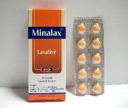

Instructions regarding medications
Medications to be avoided after surgery
- Cortisone containing medication
- Blood thinning medications
- Non steroidal analgesics
- Immunosuppressive drugs
Anti-diabetic medications following surgery.
If you are known to be diabetic, you need to measure and record your blood sugar twice daily following surgery and to follow up with a specialist as your regular medication doses might need adjustment or may be discontinued if blood sugar is controlled.
In case of a high blood sugar reading (above 200), it is advised to have your medications if they are in the oral form.
In case you use Insulin, it is advised to take rapid acting Insulin (Actrapid - Novorapid) according to scale. (5 units subcutaneously with a blood sugar 200-250, 10 units with a blood sugar 250-300, 15 units with blood sugar higher than 300). Try to contact your doctor promptly.
Anti-hypertensive medications following surgery.
If you are known to be hypertensive, you need to measure and record your blood pressure twice daily following surgery and to follow up with a specialist as your regular medication doses might need adjustment or may be discontinued if blood pressure is controlled.
In case of a high reading (starting from 140/90) it is advised to take your regular medications until consulting your doctor.
When can I start vitamin supplements for my hair? What do they include?
You can start vitamin supplements anytime after two weeks following surgery. They include:
- Biotin 10000 mcg tab, once daily
- Zinctron or Octozinc capsule, once daily
- Hemacaps or Feroglobin capsule, once daily
- Verdex ampoule, ½ an ampoule on scalp every 3 days (to be applied for 20 minutes then hair is washed)
Can I use workout related formulated protein supplements?
It is preferable to use the protein supplements prescribed by our team.
Is there an alternative for the monthly Vit B12 injection (Neurobion ampoule) in a different form?
Neurobion tablets can be used instead; one tablet every other day.
Is there an alternative for the monthly Vit D injection (Devarol ampoule) in a different form?
Vidrop oral solution can be used instead; add one bottle to half a cup of water once weekly.
Vit D tablets are another alternative; one tablet every other day.

Wound care and shower
When is the first wound dressing done? When can I have a shower?
After 48 hours following surgery
When can the wound sutures be removed?
Usually, sutures do not require removal and slowly disintegrate on their own until they disappear. However, if there are any visible sutures, they are removed during the first visit in the follow up clinic two weeks following surgery.
How is wound dressing done?
The first wound dressing is done 48 hours following surgery by exposing wounds and applying betadine using sterile gauze until dry and are left exposed. This is repeated for the next 5 days, once daily.
Exercise, activities and return to work after surgery
When can I resume my daily activities/work after surgery?
You do not need to stay at home or stay in bed or lay down for the whole day.
You can leave your house or drive your car after 3 days following surgery.
You can resume minimal effort requiring tasks after 5 days following surgery.
You can resume moderate effort requiring activities after 2 weeks following surgery (For example - moderate workout)
Total recovery is expected to be within 4 to 6 weeks following surgery. You are then allowed to pursue all activities including gym workout.
When and how can I start walking?
Casual stroll/steady walking can be resumed gradually in the day of surgery then brisk/power walking after one week or according to recovery and stamina.
When can I go swimming?
After 1 week following surgery.
Which is better? gym workout or track walking?
Track walking for a period of 30 minutes daily, 5 times weekly.
Follow up schedule, routine labs for vitamin levels
Follow up schedule after surgery
It is quite essential to stick to the follow up schedule as regimen adjustments might be needed/differ from one individual to another.
Schedule:
- After 2 weeks (surgical - nutrition), or before traveling abroad
- Every 3 months during the first year
- Every 6 months during the second year
- Once every year
Schedule of the laboratory investigations that are required for follow up of vitamin levels
Every 3 months during the first year
Every 6 months during the second year
Once every year
This includes
- CBC
- Mg, Ca, Zn, Fe, Vit B12, Vit D
When can I resume smoking?
At least after 1 month following surgery
When can I start fasting?
After two weeks following surgery
When should I contact the surgical team? What are the warning symptoms I should worry about?
- Fever (above 38 degrees)
- Persistent vomiting
- Persistent pain
- In case of inflammation of wounds (redness, discharge, swelling)
- Tight chest, trouble breathing
- Fast heart beats (more than 100 beats per minute)
- Bloody vomiting or bloody motions or black stool
- Dizziness, hypotension
Symptoms and Signs that might be experienced after surgery
What is the expected pain following surgery?
Pain is expected to last for 48 hours following surgery and then gradually subsides.
You may intermittently experience pain in your tummy, your shoulders or tingling in your legs. If it is accompanied with other symptoms such as fever or vomiting please contact the surgical team
Pain in the wound at the left side of your tummy is likely to last a little longer and may increase on doing muscular effort in this area such as during coughing or sneezing. You can take one intramuscular analgesic (Ketolac injection) if needed.
Vomiting
Vomiting may happen during the first 48 hours following surgery.
You may experience temporary attacks of vomiting if you eat in a hasty/quick manner, in large amounts, if you eat unhealthy food or if you do not follow the described nutrition regimen. In such a case, you have to rest your stomach and drink fluids only until symptoms subside then you can reintroduce food gradually. Primperan intravenous injection may be used if needed.
Diarrhea
You may experience diarrhea after surgery during the first two weeks (fluid diet) which gradually improves once you start a semisolid and solid diet. In case of persistent attacks of diarrhea, you may use Kapect suspension; one tablespoon every 8 hours along with sufficient fluid intake.
Constipation
You may experience constipation (not passing motions for 3 consecutive days), which is acceptable/normal as long as you don’t have tummy pain, vomiting or distension/bloating. It can be avoided/improved by regular activity. You may use a laxative such as Duphalac syrup; one large tablespoon 3 times daily or Minalax tablets; 2 tablets before sleep or Picolax drops; 15 drops added to half a cup of juice 3 times daily. It is better to consume a fiber rich diet once solid intake starts.
 Bloating and abdominal distension
You may experience bloating after surgery. You may use Dysflatyl chewable tablets; 2 tablets 3 times daily or Eucarbon tablets; 1 tablet 3 times daily. Try to stay active and follow the nutrition regimen.
I notice a change in my mouth odour, in the taste of certain food/sometimes I taste something bitter in my mouth/throat especially right after waking up and now I experience this throughout the whole day.
This may happen during the first 6 months after surgery and will gradually improve. During this period make sure you wash your teeth and tongue with a toothpaste more often and use a mouthwash regularly. You may use sugar free lozenges such as Strepsils.
Persistent heartburn, tummy pain and vomiting
Please follow the following regimen:
-
Controloc 40 mg tablets; twice daily
-
Gaviscon syrup; one tablespoon every 8 hours
-
Mosapride tablets; one tablet every 8 hours
In case of persistence of symptoms, H pylori in stool test should be done along with a pelvic abdominal ultrasound and contacting the surgical team.
Can I develop gallbladder stones? How can I avoid it?
Gallbladder stone formation may happen following bariatric surgeries and may be avoided by taking Ursofalk 250 mg capsules every 12 hours for 3-6 months (during rapid weight loss period) starting from the second month following surgery.
How to maintain weight after reaching the desired weight?
Noticeable lifestyle changes have to be done before and after surgery in order to maintain weight for the longest period possible. Such changes include:
- Commit to post-surgery instructions and stick to the follow up schedule.
- Commit to taking the prescribed medications and vitamins
- Follow a nutrition regimen that included 3 low sugar regular meals daily
- Avoid drinking while eating. Chew food thoroughly.
- Avoid snacks like chips, sweets and sugar containing juice and drinks.
- Stay active and workout regularly
- Consider other means for mood lifting and relaxation other than eating.
Nutrition plan
Stage I week 1-2 liquids
- Water or Ice chips
- Broth
- Diluted, clear 100% juice (1/4 cup juice, 3⁄4 water)
- Or pure canned juices
Stage I Key points
- Focus on rate of consumption
- Track volume
- Slowly increase your rate
- Goal is 64 oz of fluid per day.
Stage II week 3-4 blended meals
-
Food that is blended to a THIN liquid consistency such as milk.
-
BLEND and STRAIN
-
Protein shakes
-
Water (try alkaline if tap water not tolerated)
-
Low-fat milk
- Broth
- Low-fat, low-sodium blended and strained soup
- Vegetable juice
- Diluted fruit juice
- Rayb
- To Prepare Full Liquid Foods.....
-
Use the blender until it is a thin liquid consistency
Mix with liquid item to thin (broth, water, low-fat milk)
- STRAIN
Stage II Key points
Goal is 80-100 grams protein. Slowly work your way
up to this. Can take 2-3 weeks to reach this goal.
- LISTEN TO YOUR BODY
- STOP at first sign of fullness
- BEFORE you experience “stomach pain”
Stage III Day 15 through 30 SOFT FOODS
Foods that are soft or chewed easily
Think baby food
What Can You Have?
Protein/dairy
Scrambled egg, egg whites, poached eggs
Do not overcook. Must be soft
Low-fat cottage cheese Soups, mashed potatoes and sweet potatoes
Egg/tuna made with low fat plain Greek yogurt
Low/nonfat vegetarian refried beans
Or homemade, pureed beans
vegetables sautee
Pureed/veggiesWell-cooked, low-fiber vegetables
Squash, spinach, carrots
Low Fat, low sodium pureed soups
Stage III Key Points week 5-6 semi-solid meals
- Introduce one new food item at a time.
- Eat slowly and sip your liquids.
- No liquids 15 minutes before meals and 30 minutes afterwards.
- Avoid soft, high-calorie food and drinks such as ice- cream, which go down easily, but can halt weight loss.
- Continue to get 40-60g protein from protein beverages
- The rest you should get from food. Goal is 80-100 grams protein
- NO MORE THAN:
- 3/4 cup (6 oz) of food per meal
- 1⁄2 cup (4 oz) of food per snack
- Avoid regular texture food until 6 weeks post surgery!
Important nutrition notes
When can I chew gum?
It’s preferable not to chew gum for the first one or two months.
How much should I drink?
2 - 3 liters of fluids daily (This includes water, juice, hot drinks and soups)
How many meals should I have? Meal timings?
You should have 5 - 6 meals everyday at an interval of a meal every 2-3 hours
When can I have Orzo soup? Vermicelli soup?
Two weeks following surgery
When can I eat potatoes, rice, bakery and salads?
By the start of the fifth week following surgery except for lemon containing meals (should be postponed for 2 months)
Can I drink fresh homemade watermelon juice without added sugar? When can I start drinking fresh juice? Does consistency matter?
You can start drinking fresh homemade juice by the start of the second week. They should be blended enough to reach a consistency similar to milk and are considered a meal.
How much soup can I have per meal?
Around 150 ml
I find drinking to be quite tedious as if I’m swallowing a hard rock and I get a hiccup as soon as it reaches my stomach? Sometimes I feel nauseated, and it doesn’t always taste good?
Water can be diluted with rose water or blossom water. It is better to drink in sips.
How can I have my protein supplements? What amounts are sufficient?
Added to 200 ml of milk or water or 2 scoops of yogurt.
When will I stop having what feels to be a hiccup after I drink water?
Drinking should be divided into sips. The hiccup sensation will slowly fade away with time.
Are these protein supplements essential? I haven’t been taking any for 2 days now?
Protein supplements promote healing and prevents muscle break down
Can I have Orzo soup?
You can have orzo soup starting two weeks after surgery (oven cooked, fat free)
Can I drink Arabian coffee?
Coffee is allowed two months following surgery. Sugar free milk tea (light) is allowed. Sugar free Nescafe with zero-fat milk can be started starting from the third week following surgery.
When am I allowed to eat and drink at the same time?
It is not preferable because it is correlated with stomach dilatation.
When can I eat custard, jelly, creme caramel and rice pudding?
Two months following surgery
Can I eat lentil soup with onions and garlic?
Onions and garlic can be added to soup if not fried (boiled/cooked instead)
Can I eat cooked okra? Can I add onions and garlic to it?
Cooked vegetables are allowed starting from the fifth week
Can I eat sweet potatoes?
Yes, sweet potatoes are allowed
Why is weight loss slower by the third week compared to the first two weeks?
A lot of the initial weight loss is due to water loss, followed later by fat
Can I drink sugar cane juice?
Sugar cane juice is not allowed due to its high sugar content. This includes all Ramadan drinks.
Can I cook potatoes in an air fryer?
Yes you can use an air fryer. Just make sure it is well mashed before you eat it.
I follow the nutrition regimen thoroughly, yet I feel dizzy especially in the mornings.
You have to drink a sufficient amount of water (fluids in general); 2-3 liters daily.
Can I drink fizzy drinks?
No, due to their high content of soda.
Can I eat Chipsy, Forno, snacks and seeds?
No, they are not allowed especially during the first 3 months due to their high caloric value.
Is juice and protein supplements considered a meal? When can I have another meal?
Yes they are considered a meal. You can have another meal two hours later.
Until when will I have to continue on the protein supplements?
At least for a duration of 6 weeks.
I started eating protein in the form of meat and chicken. Do I still have to continue on the protein supplements?
You can gradually reduce it once you are tolerating a regular protein diet.
Can I eat popcorn with no oil added?
Yes, after 2 months following surgery.
How much meat/chicken should I have in one meal?
An amount of 80-100 gm.
Can I eat Tuna fish or smoked Salmon?
Yes, Tuna fish and smoked Salmon are allowed.
When can I eat/drink orange and lemon?
Two months following surgery.
How many carbohydrates rich meals can I have?
Every other day, one meal per day.
Do I get a free day?
You have one high calorie meal every 10 days.
Can I eat nuts and snacks?
Not allowed until after 3 months following surgery.
Will I be losing weight later at a similar rate to that during the first few months?
If you workout 5 times weekly while following the nutrition guide, your weight loss is less likely to plateau early.